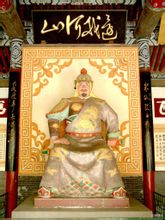

岳飞

岳飞（1103—1142），字鹏举，宋相州汤阴县（今河南安阳汤阴县）人，南宋抗金名将，中国历史上著名军事家、战略家，民族英雄，位列南宋中兴四将之一
岳飞的业绩不可磨灭。他表达了被侵犯民族的要求，坚持崇高的民族气节，在处境危难的条件下，坚持了抗金的正义斗争，并知道爱护人民的抗金力量，联合抗金军民一道，保住了南宋半壁河山，使南中国人民免遭金人的蹂躏，从而保住了高度发展的中国经济和文化，并使之得以继续向前发展。
《宋史·岳飞传》：“西汉而下，若韩、彭、绛、灌之为将，代不乏人，求其文武全器、仁智并施如宋岳飞者，一代岂多见哉。史称关云长通《春秋左氏》学，然未尝见其文章。飞北伐，军至汴梁之朱仙镇，有诏班师，飞自为表答诏，忠义之言，流出肺腑，真有诸葛孔明之风，而卒死于秦桧之手。盖飞与桧势不两立，使飞得志，则金仇可复，宋耻可雪；桧得志，则飞有死而已。昔刘宋杀檀道济，道济下狱，嗔目曰：‘自坏汝万里长城！’高宗忍自弃其中原，故忍杀飞，呜呼冤哉！呜呼冤哉！”